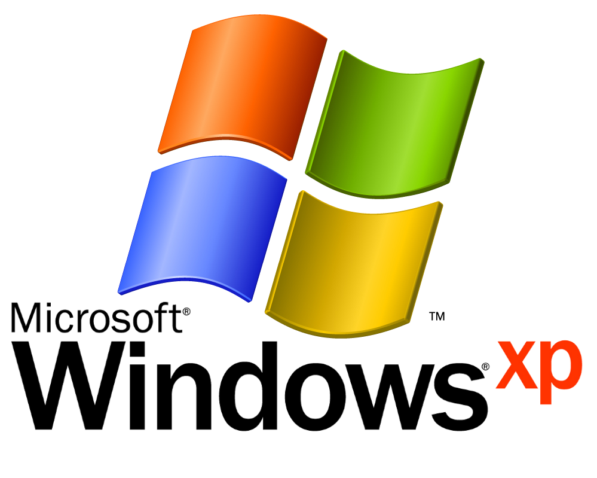

Predtavitev o Windows
Microsoft Windows (slovensko znan kot Okna ), izdelek podjetja Microsoft, je najbolj razširjen računalniški operacijski sistem, predvsem zaradi preprostega in intuitivnega uporabniškega vmesnika, ter široke programske podpore. Pogosto so v operacijskih sistemih tudi luknje. Take luknje izkoriščajo zlonamerni programi: virusi, črvi in trojanski konji. Zato je pomembno dopolnjevanje OS z varnostnimi popravki.
Začetek Windowsa sega v leto 1981, ko so začeli projekt Interface Manager. Naznanjen je bil novembra 1983 pod imenom Windows 1.0, vendar je izšel šele novembra 1985, zaradi napak s tipkovnicami. Vseboval je programe slikar, kalkulator, koledar, terminal, pisalni program, uro in nadzorno ploščo. Celoten sistem je bila grafična lupina za MS-DOS, na katerem je bilo mogoče poganjati grafične programe.
Windows 2.0 (oktober 1987) je izboljšan Windows 1.0. Vsebuje izboljšave v programih in boljšo podporo za spomin ter podporo za več grafičnih kartic. Windows 2.x je tudi prva različica sistema Windows, kjer je bilo mogoče natančno spremeniti velikost oken. Windows 2.1 je vseboval podporo za 386 in 286 procesorje. Apple je vložil tožbo proti Microsoftu, saj je bil Windows 2.0 identičen Apple Lisi.
Windows 3.0 (maj 1990) in 3.1 (marec 1992) sta imela izboljšan uporabniški vmesnik in gonilniški standard VxD. Windows 3.1 je požel uspeh, saj ga še danes uporabljajo v bankomatih in letaliških terminalih. Windows 3.0 je izšel tudi v posebni izdaji "Windows Graphical Environment with Multimedia Extensions 1.0." Ta izdaja je vsebovala podporo za boljši zvok in grafiko. Windows 3.1 pa je izšel tudi v izdaji "Windows for Workgroups." To je bila prva različica sistema Windows, ki je imela popolno podporo za omrežje.
Windows 95 (avgust 1995) je vseboval popolnoma nov uporabniški vmesnik, podporo za daljša imena, Internet Explorer, avtomatsko zaznavanje in namestitev nove strojne opreme. Windows 95 je prvi 32 bitni operacijski sistem namenjen domačim uporabnikom. Prvič je mogoče trajno shraniti ikone in datoteke na namizje. To je tudi prva različica, ki za delovanje ne potrebuje operacijskega sistema MS-DOS.
Windows 98 (junij 1998) je bil prenovljen Windows 95 z boljšo podporo za USB naprave, prenovljenim namizjem in drugimi izboljšavami. Windows 98 je požel zelo velik uspeh, saj so že prvi dan prodali 250.000 kopij[2]. Leta 1999 je izšel tudi Windows 98 Second Edition, druga izdaja, ki je vsebovala izboljšave.
Windows Millennium Edition (Me) je izšel septembra 2000. Vseboval je veliko novosti, kot so System Restore, Windows Media Player 7, System Monitor in druge. Namenjen je bil domačim uporabnikom. Imel je preobleko podobno Windows 2000. Znan je bil po nestabilnosti, zato je bil velikokrat kritiziran glede učinkovitosti in zanesljivosti delovanja.
Windows 2000 je izšel februarja 2000. Preden je Microsoft preimenoval linijo NT operacijskih sistemov, je bil Windows 2000 znan tudi kot Windows NT 5.0. Vseboval je mnogo novosti kot je nov datotečni sistem NTFS, ki je podpiral datoteke večje od 4 gigabajtov; sistem kodiranja datotek; izboljšano dosegljivost; obnovitveno konzolo in sistemska orodja. Namenjen je bil strežnikom in poslovnim uporabnikom
Windows XP je izšel avgusta 2001. Namenjen je predvsem domačim uporabnikom. Vsebuje prenovljen uporabniški vmesnik in veliko novosti. Izšel je v šestih različicah:
Professional - namenjen poslovnim uporabnikom
Home - namenjen domačim uporabnikom
Starter - najcenejša osnovna izdaja
Media Center Edition - posebna multimedijska izdaja
64 bit - Izdaja za računalnike s 64 bitnim procesorjem
Tablet - izdaja za tablične računalnike
Windows Vista je izšla januarja 2007. Med Visto in XP je največji časovni presledek v zgodovini Windows. Bila je mnogokrat preložena in veliko kritizirana zaradi počasnega vmesnika. Izšla je v šestih različicah:
Starter - najcenejša osnovna izdaja
Basic - osnovna različica za nove uporabnike
Home Premium - za naprednejše domače uporabnike
Buisness - za poslovne uporabnike
Enterprise - za strežnike
Ultimate - različica, ki vsebuje vse lastnosti vseh različic
Windows 7 je izšel oktobra 2009. Windows 7 je izboljšana različica Windows Viste in ima močno prenovljen grafični vmesnik. Izšel je v šestih različicah:
Starter - za netbooke (ni v prodaji)
Basic - osnovna različica (ni v prodaji)
Home Premium - za domačo rabo
Profesional - za poslovne uporabnike
Ultimate - različica, ki vsebuje vse lastnosti vseh različic
Enterprise - enake funkcije kot Ultimate, a brez priloženih iger in Media Centra; namenjeno za podjetja
Moj najljubši Windows start up in shutdown zvok je Windows XP.
